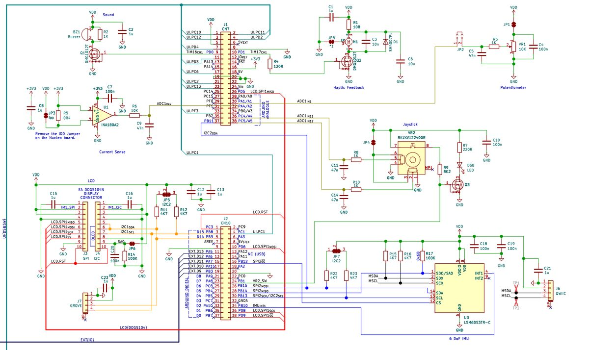

Kahu Hutton
STM32 step counter
2024. github.com/CARWHO/Step-Counter

Firmware for a step counter on an STM32 Nucleo board, with an LSM6DS IMU for step detection and an SSD1306 OLED for display.
- Step detection from a moving-average filtered accelerometer signal. The squared magnitude of the three axes is compared against a threshold on a rising edge, with hysteresis to stop double counting.
- Modular C firmware under cooperative multitasking: a super-loop polls each module at a fixed rate, and every task was timed with a hardware timer and checked against its period. Roughly 40% CPU load.
- User-settable step goals via potentiometer, audible alerts, a test mode that simulates steps from the joystick, and UART telemetry toggled by a button.
- Joystick and hardware buttons drive the display modes: step count, distance, goal, and progress.
Back